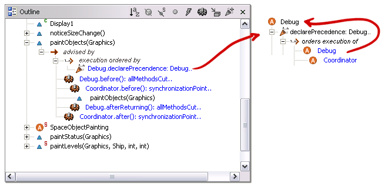
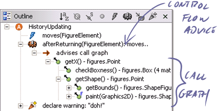
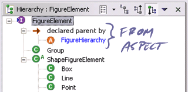

|
ajdt
ui design |
The following UI enhancements are being planned for AJDT, and are relevant to any IDE plugin for AspectJ. The UI design process benefits greatly from user participation. To comment, please follow the link to the bug report and submit a comment to the bugzilla DB. Note that the listing here only captures a summary. For details and screenshots refer to the bug report.
| Improve how crosscutting is surfaced in the editor and structure views (Bug 54240) |
|
There are two ways in which crosscutting structure appears across the views that augment the structure navigable from the AspectJ editor:
There are also additional ways in which the crosscutting could surface:
For these views we need to consider text labels, icons, annotation styles, filters, and actions. The goal should be to surface crosscutting in all of the places where it applies, ensuring when possible to be consistent with JDT UI mechanisms and conventions. |
| Show advice execution ordering at join points (Bug 50928) |
|
AspectJ precedence rules documentation...  |
| Show effects of cflow advice on call graph (Bug 50929) |
|  |
| Augmenting views that expose inheritance with aspect-declared structure (Bug 50931) |
|  |
| Provide crosscutting-specific content assist (not started) |
|
[not started] |